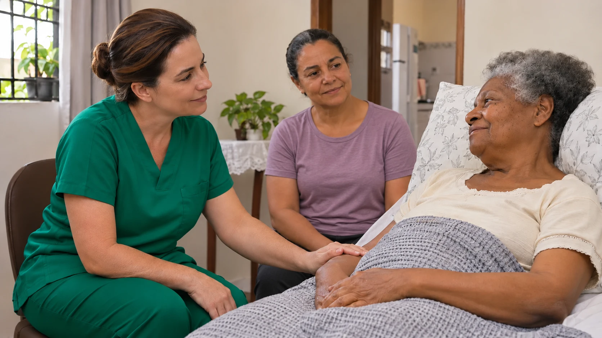
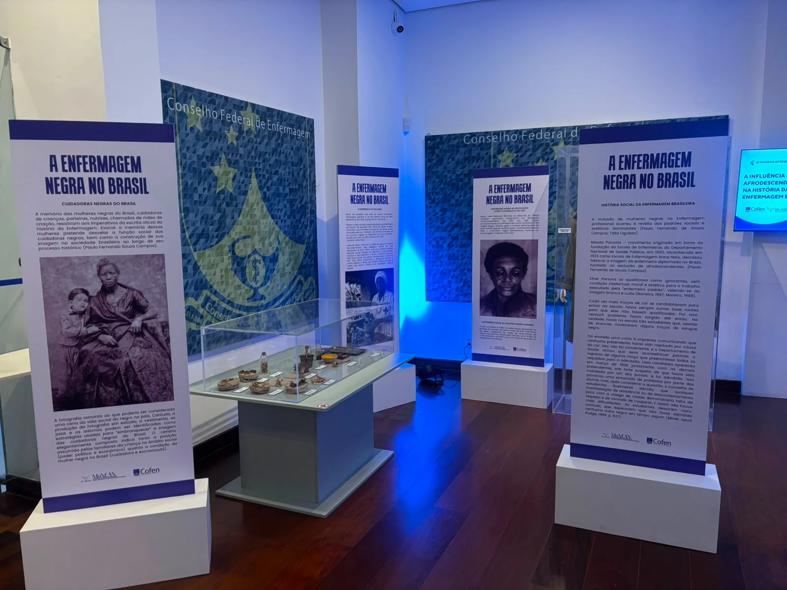

Posgrados en Enfermería
en Metodista.
Conoce nuestras especializaciones y descubre una formación que conecta ciencia, práctica y cuidado centrado en la persona.
Conoce los cursos →Conoce la institución →Nuestras especializaciones

Enfermería, Navegación y Terapias Innovadoras en Oncología
420 h · 12 meses · Híbrido
Conoce el curso →
Cuidados Paliativos y Terapias del Dolor
Control del dolor y los síntomas, comunicación y cuidado del hospital al domicilio.
Conoce el curso →
Gerontología, Cuidado y Atención Domiciliaria
Cuidado del paciente mayor en casa, en instituciones de larga estancia y durante las transiciones del cuidado.
Conoce el curso →Da el próximo paso
Consulta los requisitos y documentos en la guía de ingreso en portugués.
Quiero matricularme →Noticias y conocimientos en salud

Exposición en Salvador destaca la historia de la enfermería negra
El Cofen informó que una exposición sobre la enfermería negra está prevista del 16 al 30 de noviembre de 2026 en el Shopping Piedade de Salvador. La iniciativa con el Coren-BA y el Museo Nacional de Enfermería Anna Nery reúne documentos históricos y trayectorias profesionales de la enfermería brasileña.
Leer más →
Congreso de enfermería presentará 47 libros en diciembre
El Cofen anunció la presentación de 47 libros durante el 28.º Congreso Brasileño de los Consejos de Enfermería. Las sesiones están previstas para el 1 y 2 de diciembre de 2026 en Natal. La publicación original incluye el programa de presentaciones.
Leer más →